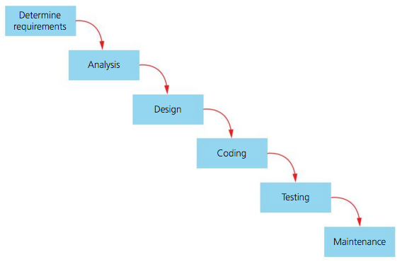

Waterfall Method
The waterfall method of development is a well known and often criticised model.
It consists of several development stages which are completed in sequence
| Advantages | Disadvantages |
|---|---|
| Because of the linear nature of this system, each stage has to be completed perfectly for the next one to run smoothly. For example, if the requirements aren't correctly understood in the first stage of the project, this can mean huge knock on effects later down the line. No-one would know that the product wasn't suitable until the product is returned to the user |